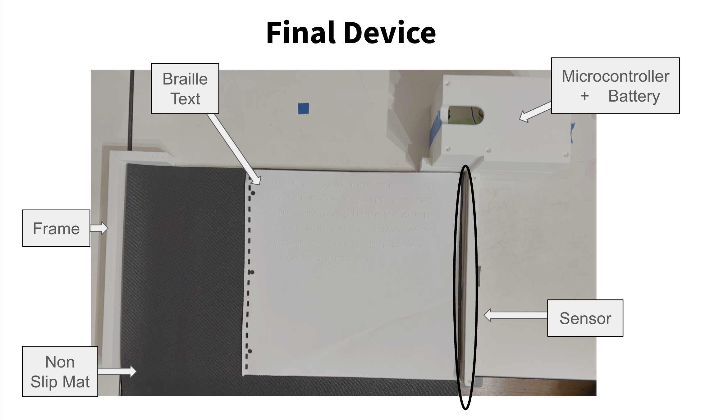

The Versions
Three iterations. One goal.
InSight evolved through three distinct versions, each shaped by real student testing and a push for richer reading insight.

Version 1
The Line Reader
ESP-32 + VL53L1X Time-of-Flight sensor with a line blocker and start button.
Measures per-line reading speed and uploads data to Google Sheets.

Version 2
Refined Design
Informed by testing at the California School for the Blind. Removed the line
blocker; added a pressure sensor and non-slip mat.
📷
Version 3
The App
Formed based on further feedback from in-depth student testing. A phone camera app with a color-coded speed heat map overlaid on the Braille
text. Flags regressions and gives character-level reading feedback.